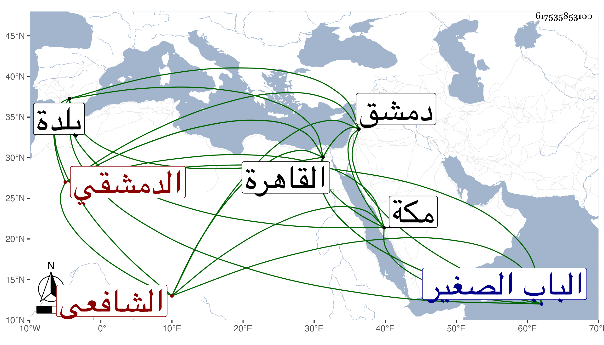

0902Sakhawi.DawLamic.ITO20230111-ara1.EIS1600.617535853100
Biography ID: 617535853100
149
أبو بكر بن علي بن محمد بن علي بن محمد بن أبي الفتوح فرح بن علي التقي أبو الصدق بن العلاء الدمشقي الشافعي خال القطب الخيضري ويعرف بالحريري . ولد في سنة أربع وسبعين وسبعمائة وقيل سنة سبع وبه جزم ابن قاضي شهبة وقال إن الأول وهم وإن كتبه بخطه وهو أقرب بدمشق وحفظ القرآن والمحرر لابن عبد الهادي والجمع بين الصحيحين والتنبيه وتصحيح الأسنوي وألفية النحو وعرض في سنة إحدى وتسعين فما بعدها على جماعة وأخذ الفقه عن الشهاب الزهري والشرفين الشريشي والملكاوي وغيرهم من أهل بلده وارتحل إلى القاهرة فأخذه عن البلقيني وابنه وطائفة والعربية عن البلقيني وغيره والحديث عن الزين العراقي أخذ عنه ألفيته وشرحها وأثبته بخطه فيمن سمع المجلس السابع والتسعين بعد الثلثمائة من أماليه والتصوف عن البلالي قرأ عليه مختصره للأحياء وسمع ببلده والقاهرة ومكة وغيرها من كثيرين كالشهاب أحمد بن علي بن عبد الحق والمحيوي يحيى الرحبي وأبي المحاسن يوسف القباني ورسلان الذهبي والكمال بن النحاس والبدر حسن بن محمد البعلي وابن قوام وأبي حفص البالسي وكالبلقيني والعراقي والهيثمي والتنوخي وابن أبي المجد والصلاح الزفتاوي والمطرز والشرف أبي بكر بن جماعة وكالعفيف النشاوري وبعض ذلك بقراءته وتقدم وأذن له في الإفتاء والتدريس وكذا أذن له العراقي في إقراء ألفيته وشرحها وناب في القضاء ببلده في رجب سنة سبع وعشرين عن الشهاب نقيب الأشراف والنجم بن حجي وغيرهما ونزل الضيائية وتصدى للكتابة على الفتيا بل كتب على المحرر لابن عبد الهادي شرحا في اثنى عشر مجلدا على نمط الديباجة للدميري سماه تخريج المحرر في شرح حديث النبي المطهر ودرس بالنجيبية وبالكلاسة وغيرهما وحدث سمع منه الفضلاء أجاز لي وكان إماما عالما خيرا ثقة أحد الأعيان زاد بعضهم ممن اشتهر بهذا الفن وبعلو الإسناد . مات في ربيع الأول سنة إحدى وخمسين ودفن بمقابر الباب الصغير وفقده الشهود وتأسفوا على فقده لأنه كان لا يرد حكما يقصد به . قاله ابن قاضي شهبة فيما نقل عنه رحمه الله وإيانا .
